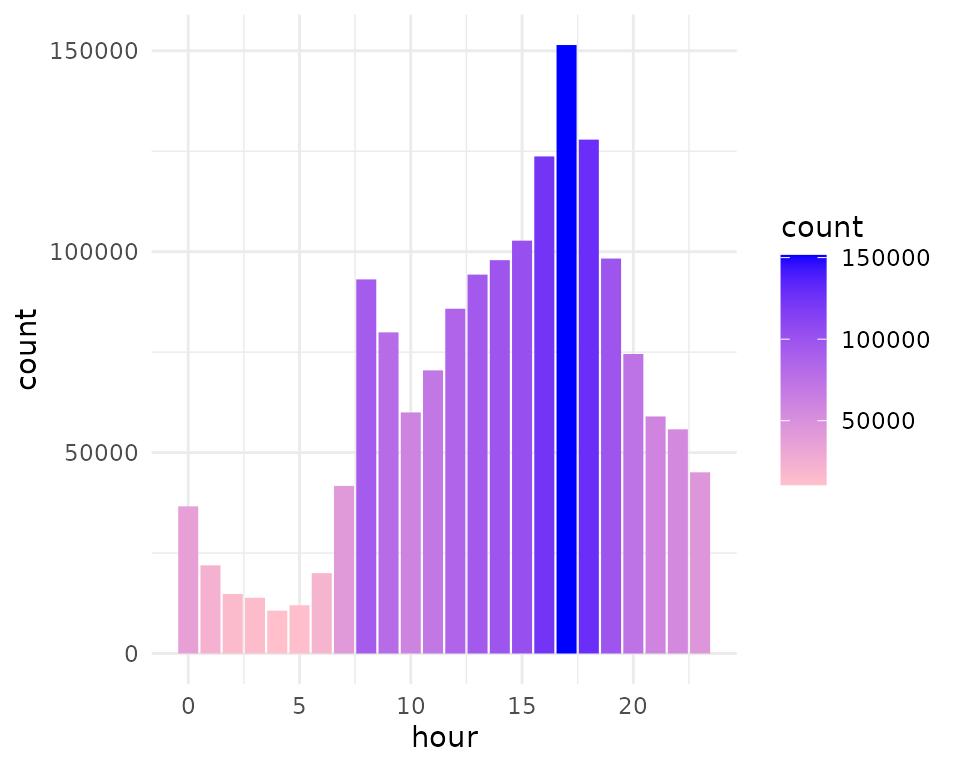
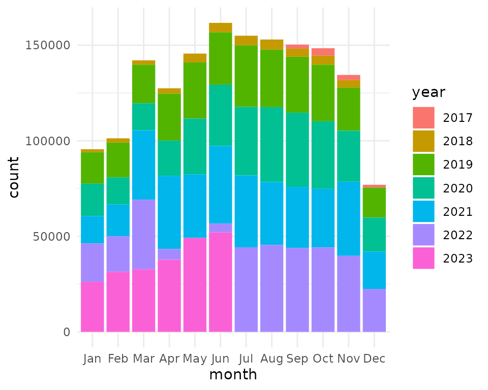
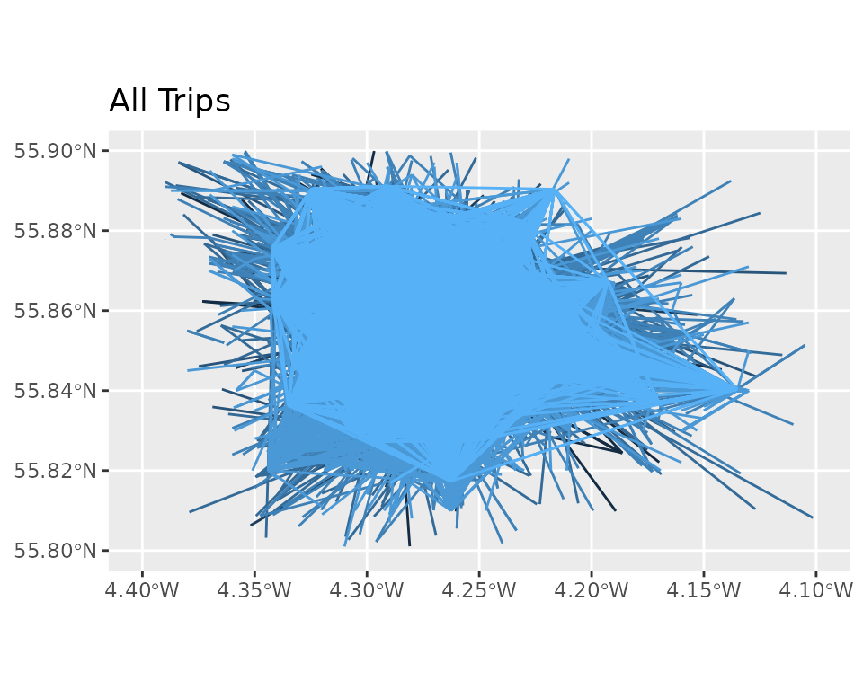

Riding a Bike
riding-a-bike.RmdSetup
Let’s take a look at the Glasgow bike hire trip data. First, load all the libraries we’ll need for the analysis. Note, you may need to install these first.
# You may need to install packages
# Install `devtools`: install.packages("devtools")
# Install `opendatascotland`: devtools::install_github("fozy81/opendatascot")
library(opendatascotland)
library(av)
library(sf)
library(tidyverse)
library(ggmap)
library(hms)
library(data.table)
library(lubridate)
library(knitr)
library(sfheaders)
library(gganimate)
library(transformr)
library(ggplot2)Meta-data
Search opendata.scot for meta-data about Glasgow Next Bike Cycle Hire trips, this describes the data and who provides it. Also we can confirm which open data licence is being used.
# Search and download
metadata <- ods_search(search = "Next Bike Cycle Hire - Glasgow")
metadata$licence
>> [1] "UK Open Government Licence v3.0"Download
Using the meta-data, we can download the raw cycle trips data directly from the provider and save it to our computer for future (and quick) reference.
trips <- ods_get(metadata)
# Data is returned as a list of data frames, extract first data frame in the
# list.
trips <- trips[[1]]Stats
Here we’ll get some summary stats to help us understand the data.
Median trip duration is around: 14 mins
Top 3 start locations:
trips %>%
group_by(`Rental place`) %>%
summarise(count = n()) %>%
arrange(-count) %>%
head(3) %>%
kable(., format = "simple", align = "c")| Rental place | count |
|---|---|
| St Enoch Square - ELECTRIC | 52587 |
| Broomielaw - ELECTRIC | 51374 |
| Glasgow Green | 46414 |
Top 3 return locations:
trips %>%
group_by(`Return place`) %>%
summarise(count = n()) %>%
arrange(-count) %>%
head(3) %>%
kable(., format = "simple", align = "c")| Return place | count |
|---|---|
| St Enoch Square - ELECTRIC | 52087 |
| Broomielaw - ELECTRIC | 50047 |
| Partick Interchange | 48725 |
Start Time
Below is a plot of trip start times over 24hrs. Looks as expected: Peaks in morning rush hours 7.30-9.30 and evening around 6pm. Quiet at 4am.
# Start time of day (hour)
trips$hour <- hour(trips$`Start time`)
# ggplot bar chart
hour_plot <- trips %>%
ggplot(aes(x = hour)) +
geom_bar(aes(fill = ..count..)) +
scale_fill_gradient(low = "pink", high = "blue") +
theme_minimal()
hour_plot
Annual monthly usage
We can see significant usage in winter but almost a doubling of usage in summer months. Although, usage in 2022 looks a little unusual.
# Extract year (as character to help plot as discrete categories in chart)
trips$year <- as.character(year(trips$`Start time`))
# Extract month as abbreviated 'Aug'...
trips$month <- lubridate::month(trips$`Start time`, abbr = TRUE, label = TRUE)
# Plot bar chart
month_plot <- trips %>%
ggplot(aes(x = month)) +
geom_bar(aes(fill = year)) +
theme_minimal()
month_plot
Map trip start points
Here we plot the start location using background map data from OpenStreetMap. We can see bike hire trips being used widely across the city. There’s some strange lat/lon start points which need to be filtered out. Not sure what explains these but filter to a bounding box around Glasgow helps.
# Clean out weird points:
# View the outliers like this: hist(trips$`START LAT`)
trips <- trips %>%
filter(!is.na(`START LAT`) &
!is.na(`START LONG`) &
`START LAT` < 55.9 &
`START LAT` > 55.8 &
`START LONG` < -4.0 &
`START LONG` > -4.4)Map
# Convert data frame into 'sf' geospatial dataframe
trips <- st_as_sf(trips, coords = c("START LONG", "START LAT"))
# Bounding box for background map
bbox <- map_dbl(st_bbox(trips), 1)
names(bbox) <- c("left", "bottom", "right", "top")
# Download background map using bounding box
map <- suppressMessages(ggmap(get_stamenmap(bbox, zoom = 12)))
# Plot background with trips start points on top
cycle_map <- map + geom_point(
data = trips,
aes(
x = unlist(map(geometry, 1)),
y = unlist(map(geometry, 2))
),
colour = "hotpink1",
pch = 16,
size = 0.5,
alpha = 0.3
) +
theme_minimal() +
theme(
axis.title = element_blank(),
axis.text = element_blank()
) + facet_wrap(vars(year))
cycle_mapStart and End Trips
Let’s explore trips that start and finish at a different location. This may give some insight into the lengths of journeys taken. We ignore trips that started and ended in the same place, as we can’t tell how far or where they went.
- Remove points with missing data
- Remove points outside Glasgow area
- Remove trips with same start and end point
trips <- ods_get(metadata)
#> 'Next Bike Cycle Hire - Glasgow Trip Data (2017-2023)' dataset was last downloaded on 2023-05-15
trips <- trips[[1]]
trips <- trips %>%
filter(!is.na(`START LAT`) &
!is.na(`START LONG`) &
!is.na(`END LAT`) &
!is.na(`END LONG`) &
`START LAT` < 55.9 &
`START LAT` > 55.8 &
`START LONG` < -4.1 &
`START LONG` > -4.4 &
`END LAT` < 55.9 &
`END LAT` > 55.8 &
`END LONG` < -4.1 &
`END LONG` > -4.4 &
`END LONG` != `START LONG` &
`END LAT` != `START LAT`)
trips <- arrange(trips, `Start time`)
trips$week <- week(trips$`Start time`)
trips$month <- month(trips$`Start time`)
trips$year <- year(trips$`Start time`)
trips$month <- str_pad(trips$month, pad = 0, width = 2)
trips$week <- str_pad(trips$week, pad = 0, width = 2)
trips$year_month <- as.integer(paste0(trips$year, trips$month))
trips$year_week <- as.integer(paste0(trips$year, trips$week))
trips <- mutate(trips, arrival_month = seq_len(nrow(trips)))
trips <- rename(trips,
start_long = `START LONG`,
start_lat = `START LAT`,
finish_long = `END LONG`,
finish_lat = `END LAT`
)
trips$id <- seq_len(nrow(trips))Distance
data <- trips
# Use this to reduce data to make it run fast /
# less RAM needed: data <- data %>% filter(year_month < 201711)
setDT(data)
data[, line_id := .I] ## Each row is a line
## create a long-form of the data
dt_line <- rbindlist(
list(
data[, .(arrival_month,
year_month,
line_id,
lon = start_long,
lat = start_lat, sequence = 1
)],
data[, .(arrival_month,
year_month,
line_id,
lon = finish_long,
lat = finish_lat,
sequence = 2
)]
)
)
setorder(dt_line, line_id, sequence)
sf <- sfheaders::sf_multilinestring(
obj = dt_line,
x = "lon",
y = "lat",
multilinestring_id = "arrival_month",
linestring_id = "line_id",
keep = TRUE
)
sf::st_crs(sf) <- 4326 ## Assume it's in Web MercatorSummarize the average ‘as the crow flies’ trip distances:
Max distance: 13719m
Min distance: 0.13m (!)
Average distance: 1962m
Map
Here we plot all the trips as straight line.
#
g <- ggplot() +
geom_sf(data = sf, mapping = aes(colour = year_month), show.legend = FALSE) +
lims(x = c(4.4, 4.1), y = c(55.8, 55.9)) +
labs(title = "All Trips")
g
Animation
Plotting all the lines at once blocks and covers many lines, so let’s animate the trips as they are taken.
steps <- seq(from = 1000, to = 664586, by = floor(nrow(sf) / 10))
sf$year <- year(trips$`Start time`)
names(steps) <- seq_along(length(steps))
make_plot <- function() {
map(steps, function(step) {
data <- sf[1:step, ]
g <- ggplot() +
geom_sf(
data = data, mapping = aes(
colour = data$arrival_month,
alpha = 0.9
),
show.legend = FALSE
) +
lims(x = c(4.4, 4.1), y = c(55.8, 55.9)) +
ggtitle(max(data$year)) +
theme_void() +
theme(
plot.background = element_rect(fill = "black", color = "black"),
plot.title = element_text(
color = "purple",
size = 14,
face = "bold",
hjust = 0.5,
vjust = 0
)
) +
scale_colour_gradient(low = "blue", high = "violet", trans = "reverse")
print(g)
})
}
video_file <- file.path(tempdir(), "output.gif")
av::av_capture_graphics(make_plot(),
video_file,
512,
480,
vfilter = "framerate=fps=4"
)
- This still ends up looking like a blob of colour…
Routes
Let’s take the start and end point of the trip and use a route planning engine to provide a line. This route plan uses the cycle network, avoiding busy roads.
NOTE: This requires having the Open Source Routing Machine (OSRM) library installed locally. Please follow link and install. Additionally, the OpenStreetMap data for Scotland needs to be downloaded and add to OSRM.
Running this code may take many days!…
# loop through sf and find a route from osrm...
steps <- seq(from = 1000, to = 664586, by = floor(nrow(trips) / 500))
purrr::map_df(split(trips, trips$id), function(trip) {
message(trip$id) # 249534 last id saved.
url <- paste0(
"http://127.0.0.1:5000/route/v1/bicycle/",
trip$start_long, ",", trip$start_lat, ";",
trip$finish_long, ",", trip$finish_lat,
"?steps=false&geometries=geojson"
)
route <- readLines((curl::curl(url)))
route <- jsonlite::fromJSON(route)
json_route <- jsonlite::toJSON(route$routes$geometry)
# Need to remove '[' bracket at start and end of json.
json_route <- substr(json_route, start = 2, stop = nchar(json_route) - 1)
geo <- st_read(json_route, quiet = TRUE)
st_write(geo, "trips.geojson", append = TRUE, quiet = TRUE)
})Animate Routes
This section requires ffmpeg system library to be installed to give fine control to generating gif and mpegs videos.
routes <- st_read("trips.geojson")
trips$day <- day(trips$`Start time`)
trips$day <- str_pad(trips$day, pad = 0, width = 2)
trips$year_day <- as.integer(paste0(trips$year, trips$week, trips$day))
map_routes3 <- bind_cols(routes, trips[seq_len(nrow(routes)), ])
map_routes3$lat_1 <- seq(
from = -4.29202,
to = -4.4,
by = -((-4.26202 - -4.4) / nrow(routes))
)[seq_len(nrow(routes))]
map_routes3$lat_2 <- seq(
from = -4.21866,
to = -4.1,
by = -((-4.24866 - -4.1) / nrow(routes))
)[seq_len(nrow(routes))]
map_routes3$lon_3 <- seq(
from = 55.8347,
to = 55.8,
by = -((55.8647 - 55.7) / nrow(routes))
)[seq_len(nrow(routes))]
map_routes3$lon_4 <- seq(
from = 55.8966,
to = 55.9,
by = -((55.8666 - 55.9) / nrow(routes))
)[seq_len(nrow(routes))]
steps <- trips[seq_len(nrow(routes)), ] %>%
group_by(year_day) %>%
summarise(steps = max(id))
steps$id <- seq_len(nrow(steps))
plots <- map(split(steps, steps$id), function(step) {
n <- step$id
message(n)
data <- map_routes3[1:step$steps, ]
lat_1 <- min(data$lat_1)
lat_2 <- max(data$lat_2)
lon_1 <- min(data$lon_3)
lon_2 <- max(data$lon_4)
g <- ggplot() +
geom_sf(
data = data, mapping = aes(
colour = arrival_month,
alpha = 0.9
),
show.legend = FALSE
) +
# Fixed lat/lon:
# lims(x = c(4.4, 4.1), y = c(55.8, 55.9)) +
# Dynamic lat/lon:
lims(x = c(lat_1, lat_2), y = c(lon_1, lon_2)) +
ggtitle(max(data$year)) +
theme_void() +
theme(
plot.background = element_rect(fill = "black", color = "black"),
plot.title = element_text(
color = "purple",
size = 14,
face = "bold",
hjust = 0.5,
vjust = 0
)
) +
scale_colour_gradient(low = "blue", high = "violet", trans = "reverse")
return(g)
})
n <- 1
map(plots[1:715], function(plot) {
ggsave(paste0("routes/", n, ".png"),
plot = plot,
width = 5,
height = 4
)
n <<- n + 1
message(n)
})
# Use ffmpeg system / command line library:
# ffmpeg -f image2 -framerate 15 -i 'routes/%d.png' -vcodec libx264
# -crf 22 video.mp4
# ffmpeg -i video.mp4 -r 4 -s 512x420 output.gifThe resulting animations shows the shortest routes cyclists may use to travel A to B using the cycle network. Of course, people hiring bikes may have chosen a different route but it gives some idea how the transport network in Glasgow is used by those hiring bikes.